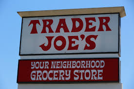

Here are some of the amazing projects I got to be part of!
Trader Joe's Order Guide ReVamp
While I was working at Trader Joe's in good old Goleta, half-way through my time there (8 years in total), the system we would place our orders on was updated from paper to a tablet app.
The software itself was a good idea, but it was poorly optimized and not really suited to our needs as employees. It took me a while but after a few trials and a lot of feedback from my coworkers, I was able to run a stable alternative.
Recipes For Life

During the pandemic I had a lot of time to think, and a lot of time to bake. Bread especially. Then started a journey of baguettes, country loaves and sourdough bread.
But that didn't quite stop there, I needed more. I then started asking the people back home in my family, extended family and dearest friends for there favorite recipes or some of the ones they had done for me in my childhood, so that I could try and replicate them myself.
To be able to share those recipes with my friends and family here in my new home, it gave me such joy that I decided I wanted to make them accessible to whoever could find them, and so I made a blog-style website called "Recipes For Life".